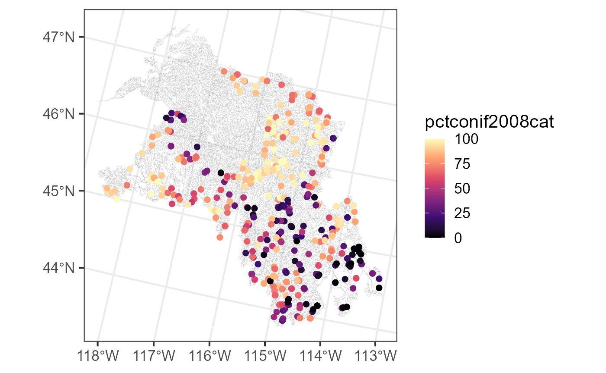
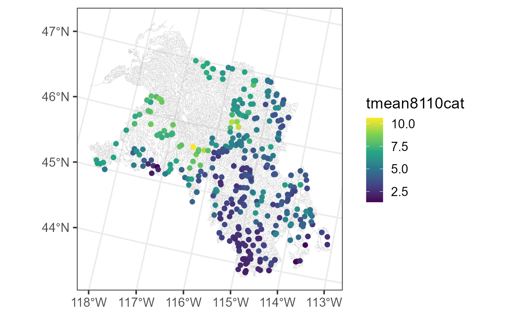
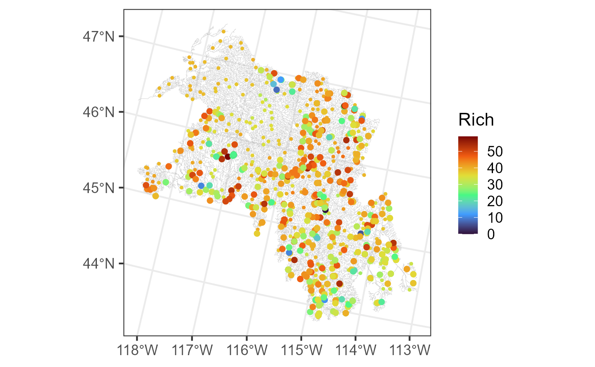

Adding Landscape Explanatory Variables to ‘SSN’ Objects Directly in R Using StreamCatTools
Michael Dumelle, Marc Weber, and Ryan Hill
Source:vignettes/articles/StreamCatTools.Rmd
StreamCatTools.RmdBackground
Landscape explanatory variables can be added directly to
SSN objects using the StreamCatTools
R package. StreamCatTools interacts with
StreamCat (Hill et al. 2016),a database of
hundreds of metrics for approximately 2.65 million stream segments in
the conterminous United States (CONUS). StreamCat metrics exist at
catchment and watershed scales and represent natural and anthropogenic
landscape variables. StreamCat is built on the medium resolution
National Hydrogrpahy Dataset Plus (version 2.1). To learn more about
StreamCat, visit their website at this
link. In this vignette, will show how to use
StreamCatTools to access StreamCat data; for more detail
regarding StreamCatTools, visit their website at this link.
Before proceeding, we load the SSN2,
StreamCatTools, and ggplot2 R
packages (which can all be installed directly from CRAN) by running:
The bugs Data
The bugs data is an SSN object that contains
macroinvertebrate data in the Lower Snake Basin. It can be downloaded
via GitHub at this
link. We read in bugs by running:
bugs <- ssn_import("bugs.ssn", predpts = "pred")There are 549 observed sites and 300 prediction sites:
bugs
#> Object of class SSN
#>
#> Object includes observations on 13 variables across 549 sites within the bounding box
#> xmin ymin xmax ymax
#> -1765346 2459843 -1343175 2909567
#>
#> Object also includes 1 set of prediction points with 300 locations
#>
#> Variable names are (found using ssn_names(object)):
#> $obs
#> [1] "comid" "ELEV_DEM" "AREAWTMAP" "Rich" "rid" "ratio"
#> [7] "upDist" "afvArea" "locID" "netID" "pid" "geometry"
#> [13] "netgeom"
#>
#> $pred
#> [1] "comid" "ELEV_DEM" "AREAWTMAP" "rid" "ratio" "upDist"
#> [7] "afvArea" "locID" "netID" "pid" "geom" "netgeom"We visualize the flowlines (edges), observed macroinvertebrate richness (obs), and prediction sites (preds) by running:
ggplot() +
geom_sf(data = bugs$edges, linewidth = 0.1, alpha = 0.8, color = "darkgrey") +
geom_sf(data = bugs$preds$pred, color = "black", size = 0.9) +
geom_sf(data = bugs$obs, aes(color = Rich), size = 2) +
scale_color_viridis_c(option = "H", limits = c(0, 59)) +
theme_bw(base_size = 16)
We create the hydrologic distance matrices required for fitting SSN models by running:
ssn_create_distmat(bugs, predpts = "pred")Adding Explanatory Variables to an SSN Object
Any of the hundreds of StreamCat metrics can be added to observed and
prediction sites through NHD’s common identifier, or COMID. The COMID is
a 10 digit code that uniquely identifies an NHD feature. The
bugs data has COMIDs available for each
observed and prediction site. StreamCat metrics can be searched at this
link or within StreamCatTools, which we discuss
later.
In StreamCat, the "tmean8110" metric contains 30-year
mean annual temperature between 1981 and 2010, and the
pctconif2008 contains the proportion of evergreen forest
land cover in 2008 (based on the National Landcover Dataset, or NLCD;
see this
link for more). StreamCat metrics are defined with respect to an
“Area of Interest”, or AOI. Typically these are “cat” (for local
catchment) or “ws” (for full upstream watershed). Additional AOIs exist
for catchments and watersheds restricted to 100 meter riparian buffer.
The sc_get_data() function in StreamCatTools
returns metrics in the AOI based on COMID:
sc_vars <- c("tmean8110", "pctconif2008")
sc_data <- sc_get_data(
metric = sc_vars,
aoi = "cat",
comid = bugs$obs$comid
)
head(sc_data)
#> comid pctconif2008cat tmean8110cat
#> 1 23428382 85.10 7.663872
#> 2 23428446 93.14 6.605735
#> 3 23428578 94.49 6.685206
#> 4 23428848 94.16 6.353155
#> 5 23428858 90.34 6.584575
#> 6 23428892 99.89 4.959707sc_data is a data frame with column comid,
column pctconif2008cat (for pctconif2008 in
the catchment AOI), and column tmean8110cat (for
tmean8110cat). These metrics are merged to
bugs$obs via "comid" by running:
bugs$obs <- merge(bugs$obs, sc_data, by = "comid")We visualize these new metrics spatially by running:
ggplot() +
geom_sf(data = bugs$edges, linewidth = 0.1, alpha = 0.8, color = "darkgrey") +
geom_sf(data = bugs$obs, aes(color = pctconif2008cat), size = 2) +
scale_color_viridis_c(option = "A") +
theme_bw(base_size = 16)
ggplot() +
geom_sf(data = bugs$edges, linewidth = 0.1, alpha = 0.8, color = "darkgrey") +
geom_sf(data = bugs$obs, aes(color = tmean8110cat), size = 2) +
scale_color_viridis_c(option = "D") +
theme_bw(base_size = 16)
Similarly, these metrics can be added to the prediction sites:
sc_pred_data <- sc_get_data(
metric = sc_vars,
aoi = "cat",
comid = bugs$preds$pred$comid
)
bugs$preds$pred <- merge(bugs$preds$pred, sc_pred_data, by = "comid")Fitting an SSN Model
We fit an SSN model describing species richness (the number of unique species) as a function of site elevation, 30-year mean annual temperature, and the percentage of the catchment with evergreen forest cover by running:
ssn_mod <- ssn_lm(
formula = Rich ~ ELEV_DEM + tmean8110cat + pctconif2008cat,
ssn.object = bugs,
tailup_type = "exponential",
taildown_type = "exponential",
additive = "afvArea"
)
summary(ssn_mod)
#>
#> Call:
#> ssn_lm(formula = Rich ~ ELEV_DEM + tmean8110cat + pctconif2008cat,
#> ssn.object = bugs, tailup_type = "exponential", taildown_type = "exponential",
#> additive = "afvArea")
#>
#> Residuals:
#> Min 1Q Median 3Q Max
#> -34.939 -4.916 2.135 7.168 23.143
#>
#> Coefficients (fixed):
#> Estimate Std. Error z value Pr(>|z|)
#> (Intercept) 58.222785 8.610861 6.762 1.37e-11 ***
#> ELEV_DEM -0.010409 0.003305 -3.150 0.00163 **
#> tmean8110cat -1.442592 0.760347 -1.897 0.05779 .
#> pctconif2008cat 0.027568 0.016689 1.652 0.09857 .
#> ---
#> Signif. codes: 0 '***' 0.001 '**' 0.01 '*' 0.05 '.' 0.1 ' ' 1
#>
#> Pseudo R-squared: 0.03298
#>
#> Coefficients (covariance):
#> Effect Parameter Estimate
#> tailup exponential de (parsill) 2.97
#> tailup exponential range 593762.56
#> taildown exponential de (parsill) 25.82
#> taildown exponential range 47730.45
#> nugget nugget 60.30Here, we modeled the spatial covariance using both a tailup exponential structure and a taildown exponential structure (we omitted a Euclidean structure). Based on the fitted model, there is strong evidence that increasing elevation is associated decreasing richness, on average (\(p\)-value < 0.01), some evidence that increasing temperature is associated with decreasing richness, on average (\(p\)-value \(\approx\) 0.06), and some evidence that increasing percent evergreen forest cover is associated with increasing richness, on average (\(p\)-value \(\approx\) 0.10).
Prediction (Kriging)
We augment the prediction sites with predictions by running:
aug_preds <- augment(ssn_mod, newdata = "pred")We visualize these predictions alongside the observed richness by running:
ggplot() +
geom_sf(data = bugs$edges, linewidth = 0.1, alpha = 0.8, color = "darkgrey") +
geom_sf(data = aug_preds, aes(color = .fitted), size = 0.9) +
geom_sf(data = bugs$obs, aes(color = Rich), size = 2) +
scale_color_viridis_c(option = "H", name = "Rich", limits = c(0, 59)) +
theme_bw(base_size = 16)
We use block Kriging to predict the average species richness in the Lower Snake Basin alongside a prediction interval by running:
predict(ssn_mod, newdata = "pred", block = TRUE, interval = "prediction")
#> fit lwr upr
#> 1 37.64725 36.0336 39.26091Other StreamCatTools Features
There are several other StreamCatTools features which
simplify the process of interacting with StreamCat. The
sc_get_params() function returns parameters available using
the StreamCat API. For example, we can learn details like AOI, category,
units, and other metadata information for each metric by running:
var_info <- sc_get_params(param = "variable_info")
head(var_info)
#> # A tibble: 6 × 13
#> category metric aoi year short_description long_description units dsid
#> <chr> <chr> <chr> <chr> <chr> <chr> <chr> <dbl>
#> 1 Anthropogen… NABD_… Cat,… NA NABD Dam Density Density of geor… Coun… 33
#> 2 Anthropogen… NABD_… Cat,… NA NABD NID Reservo… Volume all rese… Cubi… 33
#> 3 Anthropogen… NABD_… Cat,… NA NABD Normal Rese… Volume all rese… Cubi… 33
#> 4 Natural Preci… Cat,… NA Surplus Precipit… This dataset re… Kilo… 75
#> 5 Soils Rckde… Cat,… NA Mean Bedrock Dep… Mean depth (cm)… Cent… 56
#> 6 Soils agkff… Cat,… NA Ag Soil Erodibil… Mean of STATSGO… Unit… 28
#> # ℹ 5 more variables: dataset <chr>, source_name <chr>, source_URL <chr>,
#> # ACTIVE <dbl>, DSNAME <chr>You can search for specific metrics that satisfy certain conditions
using sc_get_metric_names(). For example, we can find all
the climate variables measured at catchment and watershed scales by
running:
sc_get_metric_names(category = "Climate", aoi = c("Cat", "Ws"))
#> # A tibble: 11 × 9
#> Category Metric AOI Year Short_Name Metric_Description Units Source
#> <chr> <chr> <chr> <chr> <chr> <chr> <chr> <chr>
#> 1 Climate bfi[AOI] Cat,… NA Base Flow… Base flow is the … Perc… USGS …
#> 2 Climate precip8110[A… Cat,… NA 30-year M… PRISM climate dat… Mill… PRISM
#> 3 Climate precip9120[A… Cat,… 1991… 30-year M… PRISM climate dat… Mill… PRISM
#> 4 Climate precip[Year]… Cat,… 2008… Mean Prec… PRISM climate dat… Mill… PRISM
#> 5 Climate tmax8110[AOI] Cat,… 1981… 30-year A… PRISM climate dat… Cels… PRISM
#> 6 Climate tmax9120[AOI] Cat,… 1991… 30-year A… PRISM climate dat… Cels… PRISM
#> 7 Climate tmean8110[AO… Cat,… 1981… 30-year M… PRISM climate dat… Cels… PRISM
#> 8 Climate tmean9120[AO… Cat,… 1991… 30-year M… PRISM climate dat… Cels… PRISM
#> 9 Climate tmean[Year][… Cat,… 2008… Mean Air … PRISM climate dat… Cels… PRISM
#> 10 Climate tmin8110[AOI] Cat,… 1981… 30-year A… PRISM climate dat… Cels… PRISM
#> 11 Climate tmin9120[AOI] Cat,… 1991… 30-year A… PRISM climate dat… Cels… PRISM
#> # ℹ 1 more variable: Dataset <chr>If we only have access to x- and y-coordinates (instead of COMIDs),
we can use sc_get_comid() to find the NHD feature that
contains a coordinate by running:
sct_comid <- sc_get_comid(bugs$obs)The COMIDs are stored in a single comma-separated vector (this is how StreamCat interacts its API). This vector can be separated into distinct COMIDs for more direct use with R by running
The COMIDs stored in bugs$obs match the COMIDs we
accessed via sc_get_comid():
dat_comid <- data.frame(
bugs_comid = bugs$obs$comid,
sct_comid = sct_comid
)
head(dat_comid)
#> bugs_comid sct_comid
#> 1 23428382 23428382
#> 2 23428382 23428382
#> 3 23428446 23428446
#> 4 23428578 23428578
#> 5 23428848 23428848
#> 6 23428858 23428858Here, we have only briefly explored the potential for
SSN2 integration with StreamCatTools; to learn
more about StreamCatTools, visit their website at this link.
Alternatives to StreamCat
Several other landscape data sources exist for stream networks outside of CONUS. In Canada, there is the Canadian Hydrospatial Network (this link). In Europe, there is EU-Hydro (this link). In Australia, there is Geofabric (this link). Worldwide there is HydroAtlas (this link), though HydroAtlas data tends to be coarser than more localized data sets.
R Code Appendix
knitr::opts_chunk$set(
collapse = TRUE,
comment = "#>",
message = FALSE,
warning = FALSE
)
library(SSN2)
library(StreamCatTools)
library(ggplot2)
bugs <- ssn_import("bugs.ssn", predpts = "pred")
bugs
ggplot() +
geom_sf(data = bugs$edges, linewidth = 0.1, alpha = 0.8, color = "darkgrey") +
geom_sf(data = bugs$preds$pred, color = "black", size = 0.9) +
geom_sf(data = bugs$obs, aes(color = Rich), size = 2) +
scale_color_viridis_c(option = "H", limits = c(0, 59)) +
theme_bw(base_size = 16)
ssn_create_distmat(bugs, predpts = "pred")
sc_vars <- c("tmean8110", "pctconif2008")
sc_data <- sc_get_data(
metric = sc_vars,
aoi = "cat",
comid = bugs$obs$comid
)
head(sc_data)
bugs$obs <- merge(bugs$obs, sc_data, by = "comid")
ggplot() +
geom_sf(data = bugs$edges, linewidth = 0.1, alpha = 0.8, color = "darkgrey") +
geom_sf(data = bugs$obs, aes(color = pctconif2008cat), size = 2) +
scale_color_viridis_c(option = "A") +
theme_bw(base_size = 16)
ggplot() +
geom_sf(data = bugs$edges, linewidth = 0.1, alpha = 0.8, color = "darkgrey") +
geom_sf(data = bugs$obs, aes(color = tmean8110cat), size = 2) +
scale_color_viridis_c(option = "D") +
theme_bw(base_size = 16)
sc_pred_data <- sc_get_data(
metric = sc_vars,
aoi = "cat",
comid = bugs$preds$pred$comid
)
bugs$preds$pred <- merge(bugs$preds$pred, sc_pred_data, by = "comid")
ssn_mod <- ssn_lm(
formula = Rich ~ ELEV_DEM + tmean8110cat + pctconif2008cat,
ssn.object = bugs,
tailup_type = "exponential",
taildown_type = "exponential",
additive = "afvArea"
)
summary(ssn_mod)
aug_preds <- augment(ssn_mod, newdata = "pred")
ggplot() +
geom_sf(data = bugs$edges, linewidth = 0.1, alpha = 0.8, color = "darkgrey") +
geom_sf(data = aug_preds, aes(color = .fitted), size = 0.9) +
geom_sf(data = bugs$obs, aes(color = Rich), size = 2) +
scale_color_viridis_c(option = "H", name = "Rich", limits = c(0, 59)) +
theme_bw(base_size = 16)
predict(ssn_mod, newdata = "pred", block = TRUE, interval = "prediction")
var_info <- sc_get_params(param = "variable_info")
head(var_info)
sc_get_metric_names(category = "Climate", aoi = c("Cat", "Ws"))
sct_comid <- sc_get_comid(bugs$obs)
sct_comid <- unlist(strsplit(sct_comid, ","))
dat_comid <- data.frame(
bugs_comid = bugs$obs$comid,
sct_comid = sct_comid
)
head(dat_comid)